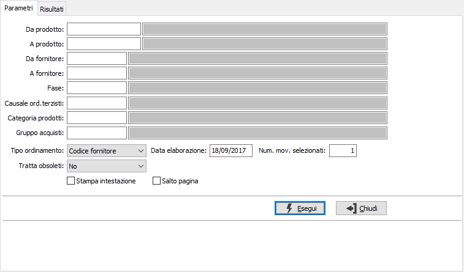
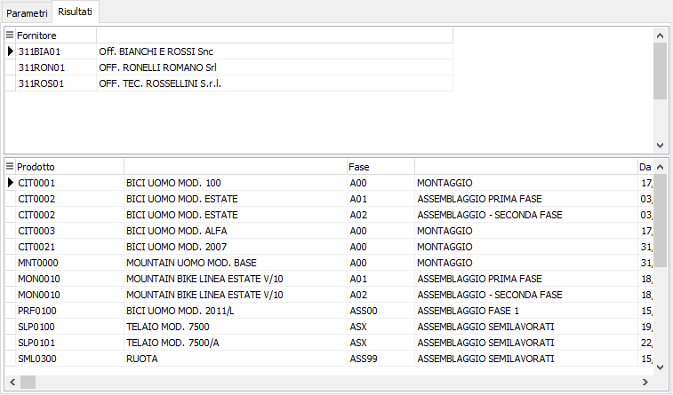

Analisi ultimi prezzi
Il programma permette di analizzare gli ultimi prezzi di lavorazione applicati dai terzisti in base agli ordini.

Per default viene selezionato l’ultimo prezzo, ma è possibile agire sul parametro “N. movimenti selezionati” per definire il numero di prezzi da visualizzare.
Tramite il parametro "Tipo ordinamento" è possibile ordinare l'analisi per fornitore/prodotto o per prodotto/fornitore.

Una volta impostati i criteri di selezione vengono visualizzati per fornitore/prodotto o per prodotto/fornitore (in base al tipo di ordinamento impostato) gli ultimi ordini di lavorazione selezionati con il dettaglio della quantità, del prezzo e degli sconti.
Dalla pagina Risultati, tramite i pulsanti presenti nella Toolbar sarà possibile effettuare la stampa.